4.7 Visualizing (ggplot2)
The following material is adapted from Kieran Healy’s excellent book (2019) on data visualization and Hadley Wickham’s equally excellent book on ggplot2. For more theoretical discussions, I recommend you to read The Grammar of Graphics by Leland Wilkinson.
Why should we care about data visualization? More precisely, why should we learn the grammar of statistical graphics?
Sometimes, pictures are better tools than words in 1) exploring, 2) understanding, and 3) explaining data.
4.7.1 Motivation
Anscombe’s quarter comprises four datasets, which are so alike in terms of their descriptive statistics but quite different when presented graphically.
## x1 x2 x3 x4 y1 y2 y3 y4
## 1 10 10 10 8 8.04 9.14 7.46 6.58
## 2 8 8 8 8 6.95 8.14 6.77 5.76
## 3 13 13 13 8 7.58 8.74 12.74 7.71
## 4 9 9 9 8 8.81 8.77 7.11 8.84
## 5 11 11 11 8 8.33 9.26 7.81 8.47
## 6 14 14 14 8 9.96 8.10 8.84 7.04
## 7 6 6 6 8 7.24 6.13 6.08 5.25
## 8 4 4 4 19 4.26 3.10 5.39 12.50
## 9 12 12 12 8 10.84 9.13 8.15 5.56
## 10 7 7 7 8 4.82 7.26 6.42 7.91
## 11 5 5 5 8 5.68 4.74 5.73 6.89## y1 y2 y3 y4
## x1 0.8164205 0.8162365 0.8162867 -0.3140467
## x2 0.8164205 0.8162365 0.8162867 -0.3140467
## x3 0.8164205 0.8162365 0.8162867 -0.3140467
## x4 -0.5290927 -0.7184365 -0.3446610 0.8165214# gather and select
anscombe_processed <- anscombe %>%
gather(x_name, x_value, x1:x4) %>%
gather(y_name, y_value, y1:y4)
# plot
anscombe_processed %>%
ggplot(aes(x = x_value, y = y_value)) +
geom_point() +
geom_smooth(method = lm, se = FALSE) +
facet_grid(x_name ~ y_name) +
theme_bw() +
labs(
x = "X values",
y = "Y values",
title = "Anscombe's quartet"
)## `geom_smooth()` using formula = 'y ~ x'
4.7.2 The grammar of graphics
the grammar of graphics
- data
- aesthetic attributes (color, shape, size)
- geometric objects (points, lines, bars)
- stats (summary stats)
- scales (map values in the data space)
- coord (data coordinates)
- facet (facetting specifications)
No worries about new terms. We’re going to learn them by actually plotting.
Workflow:
- Tidy data
- Mapping
- Geom
- Cor_ordinates and scales
- Labels and guides
- Themes
- Save files
4.7.3 mapping and geom
aes(aesthetic mappings or aesthetics) tells which variables (x, y) in your data should be represented by which visual elements (color, shape, size) in the plot.geom_tells the type of plot you are going to use
4.7.4 basic aes (x , y)
p <- ggplot(
data = gapminder,
mapping = aes(x = gdpPercap, y = lifeExp)
) # ggplot or R in general takes positional arguments too. So, you don't need to name data, mapping each time you use ggplot2.
p
## `geom_smooth()` using method = 'gam' and formula = 'y ~ s(x, bs = "cs")'
4.7.5 Univariate distribution
geom_histogram(): For the probability distribution of a continuous variable. Bins divide the entire range of values into a series of intervals (see the Wiki entry).geom_density(): Also for the probability distribution of a continuous variable. It calculates a kernel density estimate of the underlying distribution.
4.7.5.1 Histogram
## # A tibble: 437 × 28
## PID county state area poptotal popdensity popwhite popblack popamerindian
## <int> <chr> <chr> <dbl> <int> <dbl> <int> <int> <int>
## 1 561 ADAMS IL 0.052 66090 1271. 63917 1702 98
## 2 562 ALEXAN… IL 0.014 10626 759 7054 3496 19
## 3 563 BOND IL 0.022 14991 681. 14477 429 35
## 4 564 BOONE IL 0.017 30806 1812. 29344 127 46
## 5 565 BROWN IL 0.018 5836 324. 5264 547 14
## 6 566 BUREAU IL 0.05 35688 714. 35157 50 65
## 7 567 CALHOUN IL 0.017 5322 313. 5298 1 8
## 8 568 CARROLL IL 0.027 16805 622. 16519 111 30
## 9 569 CASS IL 0.024 13437 560. 13384 16 8
## 10 570 CHAMPA… IL 0.058 173025 2983. 146506 16559 331
## # ℹ 427 more rows
## # ℹ 19 more variables: popasian <int>, popother <int>, percwhite <dbl>,
## # percblack <dbl>, percamerindan <dbl>, percasian <dbl>, percother <dbl>,
## # popadults <int>, perchsd <dbl>, percollege <dbl>, percprof <dbl>,
## # poppovertyknown <int>, percpovertyknown <dbl>, percbelowpoverty <dbl>,
## # percchildbelowpovert <dbl>, percadultpoverty <dbl>,
## # percelderlypoverty <dbl>, inmetro <int>, category <chr>midwest %>%
ggplot(aes(x = area)) +
geom_histogram() # stat_bin argument picks up 30 bins (or "bucket") by default.## `stat_bin()` using `bins = 30`. Pick better value with `binwidth`.
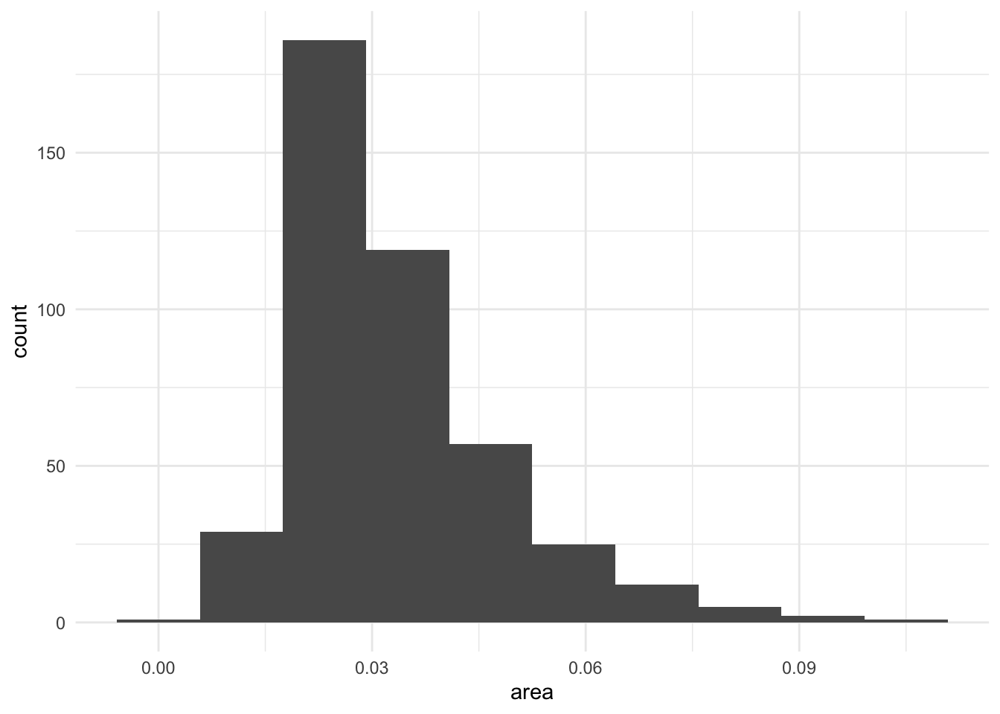
ggplot(
data = subset(midwest, state %in% c("OH", "IN")),
mapping = aes(x = percollege, fill = state)
) +
geom_histogram(alpha = 0.7, bins = 20) +
scale_fill_viridis_d()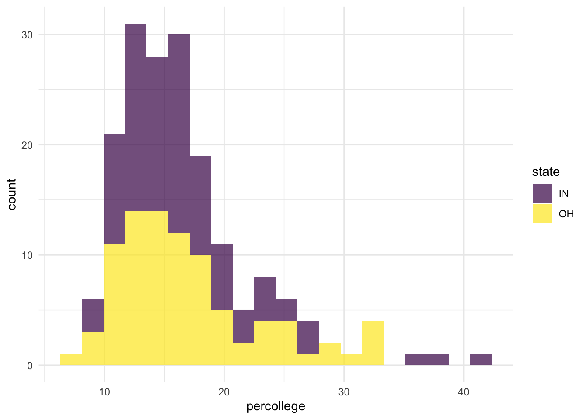

4.7.6 Advanced aes (size, color)
There’s also
fillargument (mostly used ingeom_bar()). Coloraesaffects the appearance of lines and points, fill is for the filled areas of bars, polygons, and in some cases, the interior of a smoother’s standard error ribbon.The property size/color/fill represents…
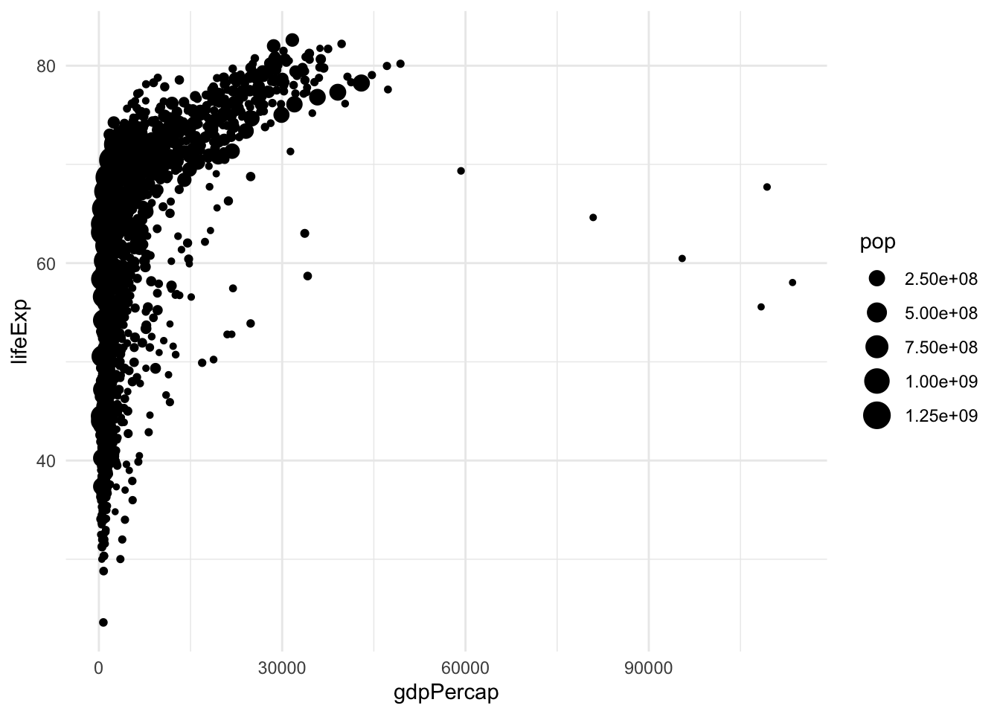
ggplot(
data = gapminder,
mapping = aes(
x = gdpPercap, y = lifeExp,
size = pop,
color = continent
)
) +
geom_point() +
scale_color_viridis_d()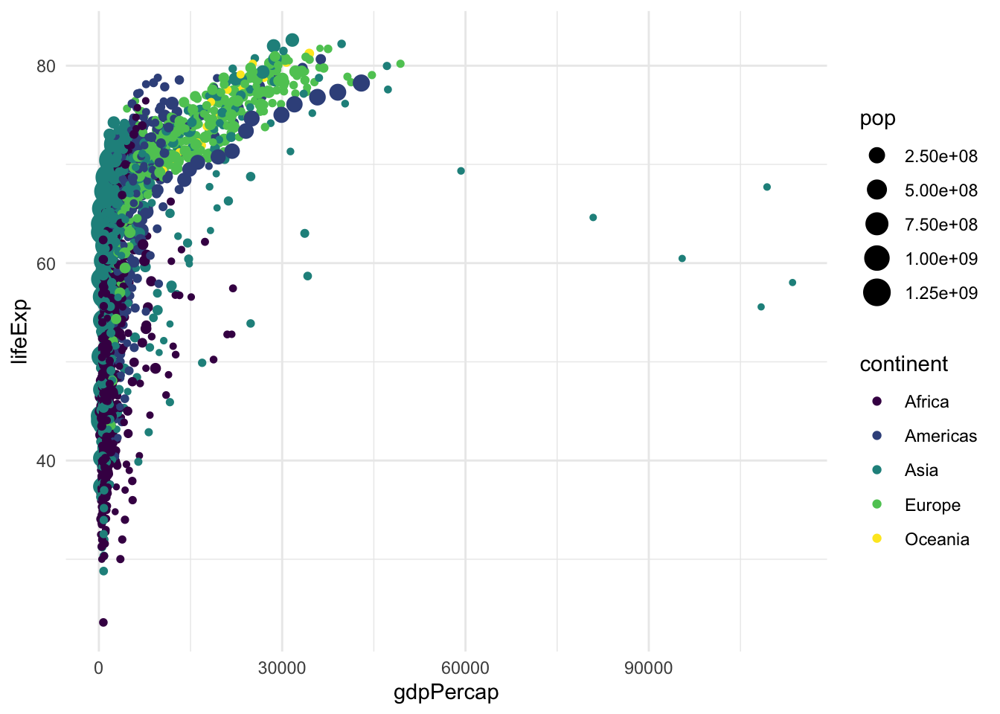
# try red instead of "red"
ggplot(
data = gapminder,
mapping = aes(
x = gdpPercap, y = lifeExp,
size = pop,
color = "red"
)
) +
geom_point()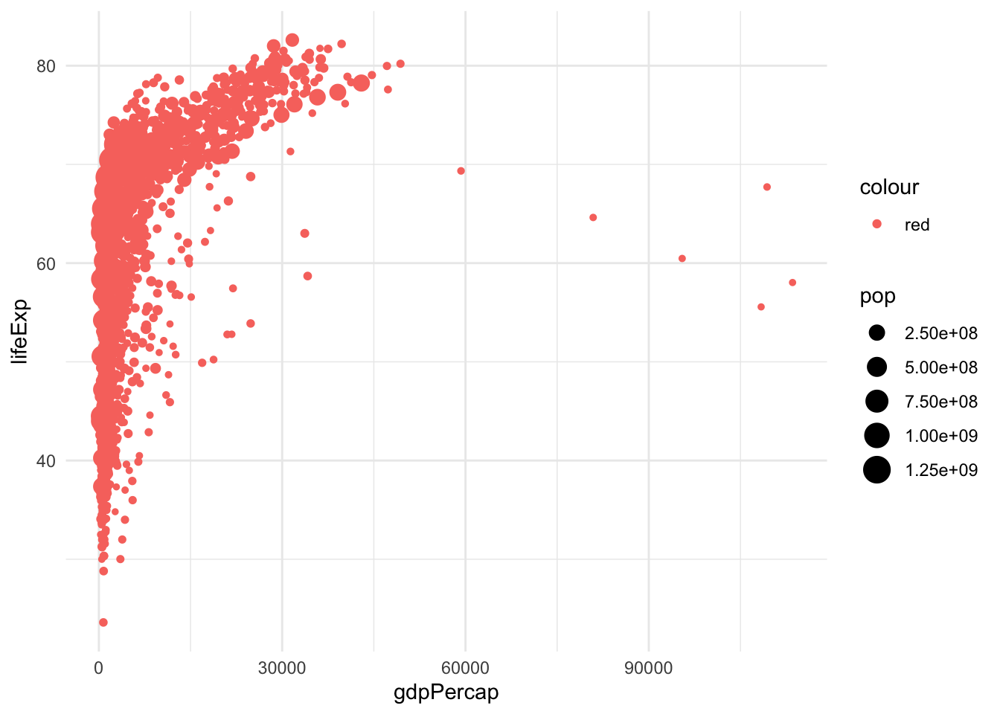
Aesthetics also can be mapped per Geom.
## `geom_smooth()` using method = 'gam' and formula = 'y ~ s(x, bs = "cs")'p + geom_point(alpha = 0.3) + # alpha controls transparency
geom_smooth(color = "red", se = FALSE, size = 2)## Warning: Using `size` aesthetic for lines was deprecated in ggplot2 3.4.0.
## ℹ Please use `linewidth` instead.
## This warning is displayed once every 8 hours.
## Call `lifecycle::last_lifecycle_warnings()` to see where this warning was generated.## `geom_smooth()` using method = 'gam' and formula = 'y ~ s(x, bs = "cs")'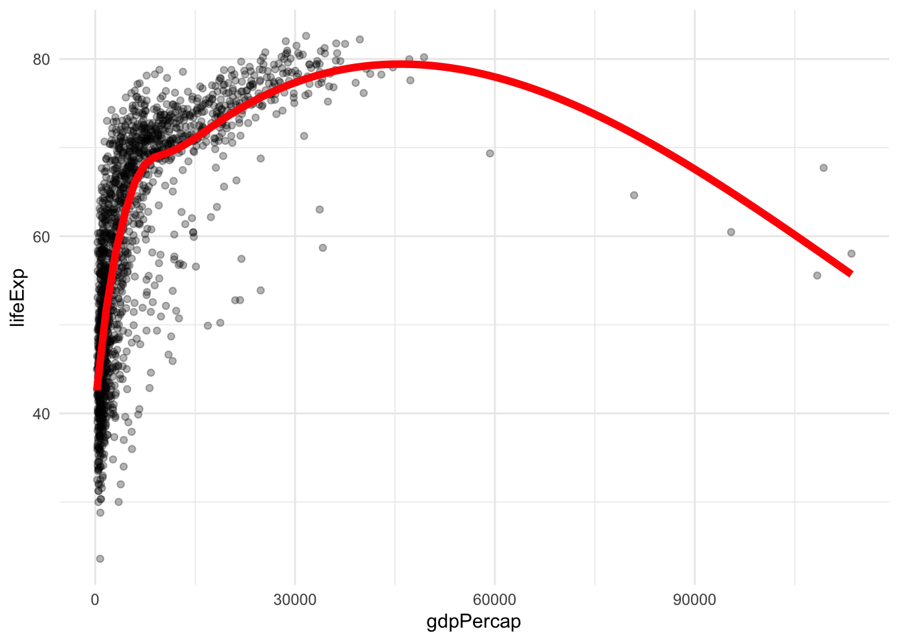
p + geom_point(alpha = 0.3) + # alpha controls transparency
geom_smooth(color = "red", se = FALSE, size = 2, method = "lm")## `geom_smooth()` using formula = 'y ~ x'ggplot(
data = gapminder,
mapping = aes(
x = gdpPercap, y = lifeExp,
color = continent
)
) +
geom_point(alpha = 0.3) +
geom_smooth(method = "loess", color = "red") +
labs(
x = "log GDP",
y = "Life Expectancy",
title = "A Gapminder Plot",
subtitle = "Data points are country-years",
caption = "Source: Gapminder"
)## `geom_smooth()` using formula = 'y ~ x'
ggplot(
data = gapminder,
mapping = aes(
x = gdpPercap, y = lifeExp,
color = continent,
fill = continent
)
) +
geom_point(alpha = 0.3) +
geom_smooth(method = "loess", color = "red") +
labs(
x = "log GDP",
y = "Life Expectancy",
title = "A Gapminder Plot",
subtitle = "Data points are country-years",
caption = "Source: Gapminder"
) +
scale_color_viridis_d() +
scale_fill_viridis_d()## `geom_smooth()` using formula = 'y ~ x'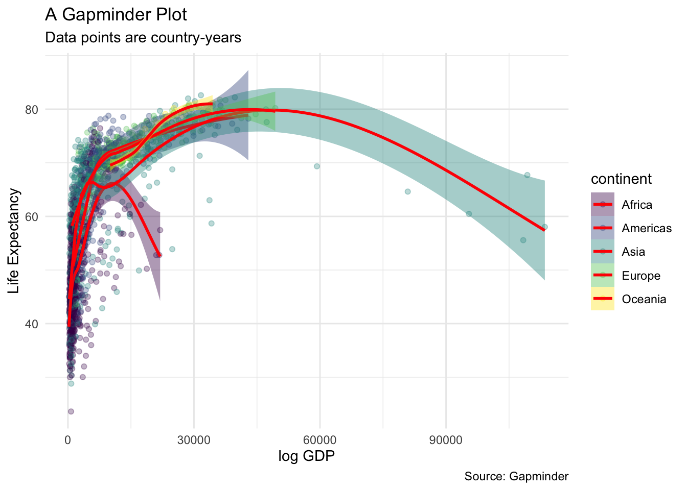
4.7.7 Co-ordinates and scales
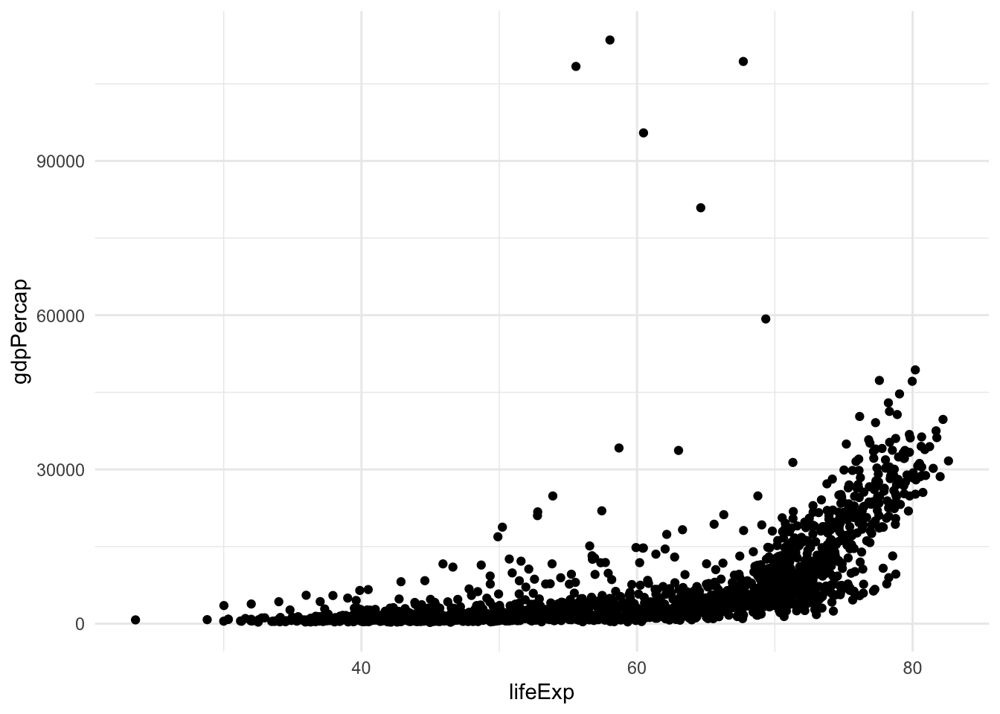
The data is heavily bunched up against the left side.
## `geom_smooth()` using formula = 'y ~ x'4.7.8 Labels and guides
scales package has some useful premade formatting functions. You can either load scales or just grab the function you need from the library using scales::
p + geom_point(alpha = 0.3) +
geom_smooth(method = "loess", color = "red") +
scale_x_log10(labels = scales::dollar) +
labs(
x = "log GDP",
y = "Life Expectancy",
title = "A Gapminder Plot",
subtitle = "Data points are country-years",
caption = "Source: Gapminder"
)## `geom_smooth()` using formula = 'y ~ x'
- Themes
p + geom_point(alpha = 0.3) +
geom_smooth(method = "loess", color = "red") +
scale_x_log10(labels = scales::dollar) +
labs(
x = "log GDP",
y = "Life Expectancy",
title = "A Gapminder Plot",
subtitle = "Data points are country-years",
caption = "Source: Gapminder"
) +
theme_economist()## `geom_smooth()` using formula = 'y ~ x'
4.7.9 ggsave
figure_example <- p + geom_point(alpha = 0.3) +
geom_smooth(method = "gam", color = "red") +
scale_x_log10(labels = scales::dollar) +
labs(
x = "log GDP",
y = "Life Expectancy",
title = "A Gapminder Plot",
subtitle = "Data points are country-years",
caption = "Source: Gapminder"
) +
theme_economist()
ggsave(figure_example, here("outputs", "figure_example.png"))4.7.10 Many plots
Basic ideas:
- Grouping: tell
ggplot2about the structure of your data - Facetting: break up your data into pieces for a plot
4.7.10.1 Grouping
- Can you guess what’s wrong?
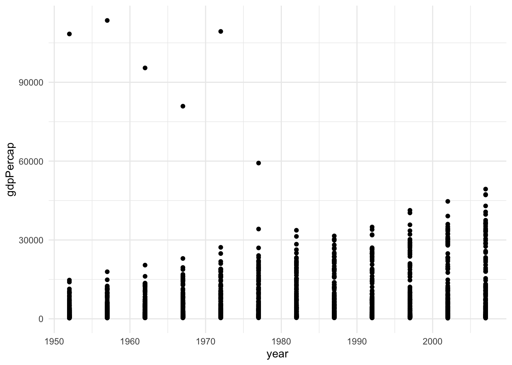

geom_line joins up all the lines for each particular year in the order they appear in the dataset. ggplot2 does not know the yearly observations in your data are grouped by country.
You need grouping when the grouping information you need to tell is not built into the mapped variables (like continent).
## # A tibble: 1,704 × 6
## country continent year lifeExp pop gdpPercap
## <fct> <fct> <int> <dbl> <int> <dbl>
## 1 Afghanistan Asia 1952 28.8 8425333 779.
## 2 Afghanistan Asia 1957 30.3 9240934 821.
## 3 Afghanistan Asia 1962 32.0 10267083 853.
## 4 Afghanistan Asia 1967 34.0 11537966 836.
## 5 Afghanistan Asia 1972 36.1 13079460 740.
## 6 Afghanistan Asia 1977 38.4 14880372 786.
## 7 Afghanistan Asia 1982 39.9 12881816 978.
## 8 Afghanistan Asia 1987 40.8 13867957 852.
## 9 Afghanistan Asia 1992 41.7 16317921 649.
## 10 Afghanistan Asia 1997 41.8 22227415 635.
## # ℹ 1,694 more rows4.7.10.2 Facetting
Facetting is to make small multiples.
facet_wrap: based on a single categorical variable likefacet_wrap(~single_categorical_variable). Your panels will be laid out in order and then wrapped into a grid.facet_grid: when you want to cross-classify some data by two categorical variables likefacet_grid(one_cat_variable ~ two_cat_variable).
p <- ggplot(gapminder, aes(x = year, y = gdpPercap))
p + geom_line(aes(group = country)) # group by, # The outlier is Kuwait.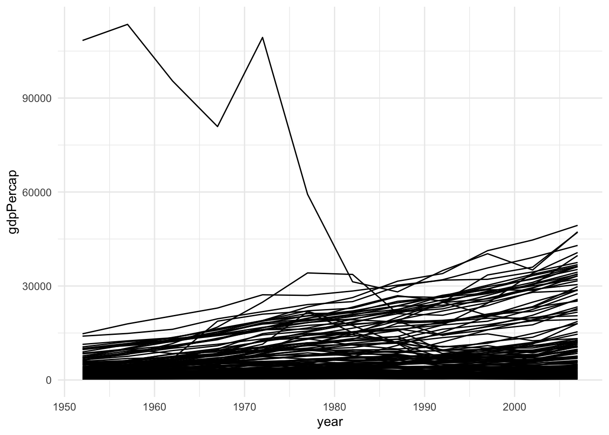

p + geom_line(aes(group = country), color = "gray70") +
geom_smooth(size = 1.1, method = "loess", se = FALSE) +
scale_y_log10(labels = scales::dollar) +
facet_wrap(~continent, ncol = 5) + # for single categorical variable; for multiple categorical variables use facet_grid()
labs(
x = "Year",
y = "GDP per capita",
title = "GDP per capita on Five continents"
) +
theme(axis.text.x = element_text(angle = 90, hjust = 1))## `geom_smooth()` using formula = 'y ~ x'
p + geom_line(aes(group = country), color = "gray70") +
geom_smooth(size = 1.1, method = "loess", se = FALSE) +
scale_y_log10(labels = scales::dollar) +
facet_grid(~continent) + # for single categorical variable; for multiple categorical variables use facet_grid()
labs(
x = "Year",
y = "GDP per capita",
title = "GDP per capita on Five continents"
) +
theme(axis.text.x = element_text(angle = 90, hjust = 1))## `geom_smooth()` using formula = 'y ~ x'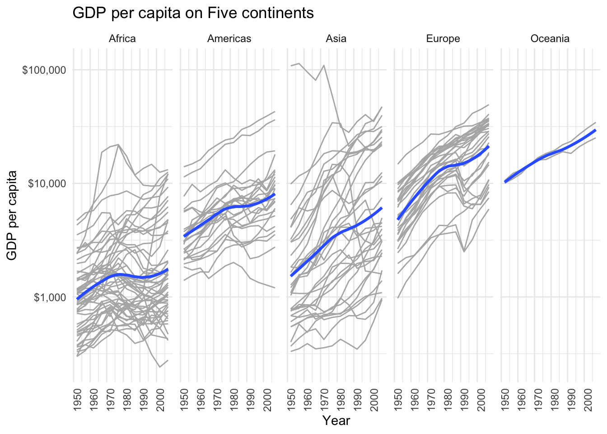
4.7.11 Transforming
- Transforming: perform some calculations on or summarize your data before producing the plot
4.7.11.1 Use pipes to summarize data
Also, we experiment with bar charts here. By default, geom_bar uses stat = “bins”, which makes the height of each bar equal to the number of cases in each group. If you have a y column, then you should use stat = "identity" argument. Alternatively, you can use geom_col().
gapminder_formatted <- gapminder %>%
group_by(continent, year) %>%
summarize(
gdp_mean = mean(gdpPercap),
lifeExp_mean = mean(lifeExp)
)## `summarise()` has grouped output by 'continent'. You can override using the
## `.groups` argument.ggplot(data = gapminder_formatted, aes(x = year, y = lifeExp_mean, color = continent)) +
geom_point() +
labs(
x = "Year",
y = "Life expectancy",
title = "Life expectancy on Five continents"
)
gapminder %>%
dplyr::filter(continent == "Europe") %>%
group_by(country, year) %>%
summarize(
gdp_mean = mean(gdpPercap),
lifeExp_mean = mean(lifeExp)
) %>%
ggplot(aes(x = year, y = lifeExp_mean, color = country)) +
geom_point() +
labs(
x = "Year",
y = "Life expectancy",
title = "Life expectancy in Europe"
)## `summarise()` has grouped output by 'country'. You can override using the
## `.groups` argument.# geom point
gapminder %>%
dplyr::filter(continent == "Europe") %>%
group_by(country, year) %>%
summarize(
gdp_mean = mean(gdpPercap),
lifeExp_mean = mean(lifeExp)
) %>%
ggplot(aes(x = year, y = lifeExp_mean)) +
geom_point() +
labs(
x = "Year",
y = "Life expectancy",
title = "Life expectancy in Europe"
) +
facet_wrap(~country)## `summarise()` has grouped output by 'country'. You can override using the
## `.groups` argument.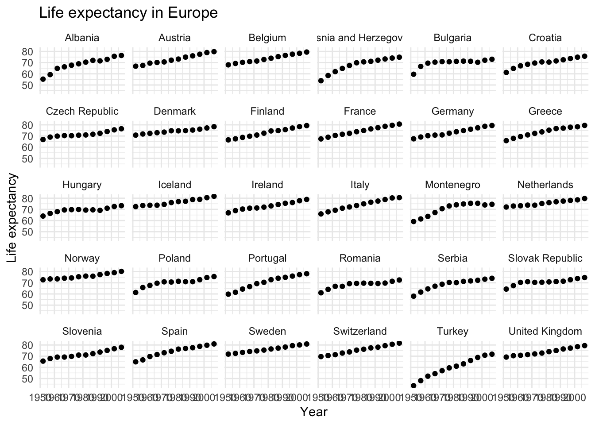
# geom bar
gapminder %>%
dplyr::filter(continent == "Europe") %>%
group_by(country, year) %>%
summarize(
gdp_mean = mean(gdpPercap),
lifeExp_mean = mean(lifeExp)
) %>%
ggplot(aes(x = year, y = lifeExp_mean)) +
geom_bar(stat = "identity") +
labs(
x = "Year",
y = "Life expectancy",
title = "Life expectancy in Europe"
) +
facet_wrap(~country)## `summarise()` has grouped output by 'country'. You can override using the
## `.groups` argument.# no facet
gapminder %>%
dplyr::filter(continent == "Europe") %>%
group_by(country, year) %>%
summarize(
gdp_mean = mean(gdpPercap),
lifeExp_mean = mean(lifeExp)
) %>%
ggplot(aes(x = year, y = lifeExp_mean, fill = country)) +
geom_bar(stat = "identity") + # even if you not stack, still the plot looks messy or you can use geom_col()
labs(
x = "Year",
y = "Life expectancy",
title = "Life expectancy in Europe"
)## `summarise()` has grouped output by 'country'. You can override using the
## `.groups` argument.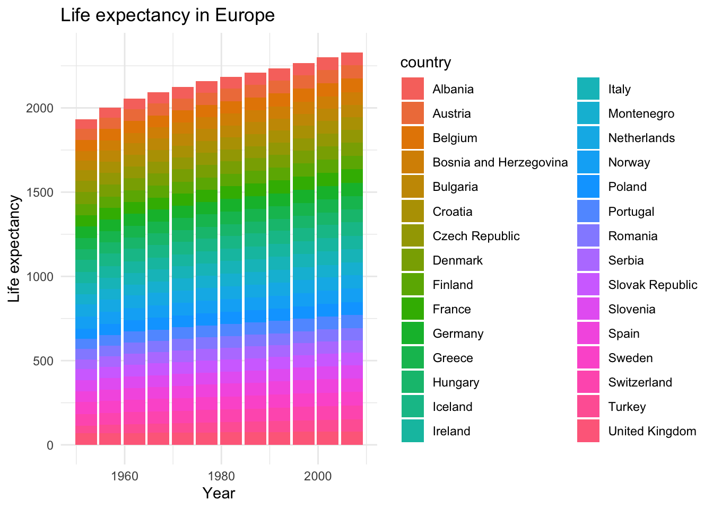
gapminder %>%
dplyr::filter(continent == "Europe") %>%
group_by(country, year) %>%
summarize(
gdp_mean = mean(gdpPercap),
lifeExp_mean = mean(lifeExp)
) %>%
ggplot(aes(x = country, y = lifeExp_mean)) +
geom_boxplot() +
labs(
x = "Country",
y = "Life expectancy",
title = "Life expectancy in Europe"
) +
coord_flip()## `summarise()` has grouped output by 'country'. You can override using the
## `.groups` argument.
# without ordering
gapminder %>%
dplyr::filter(continent == "Europe") %>%
group_by(country, year) %>%
summarize(
gdp_mean = mean(gdpPercap),
lifeExp_mean = mean(lifeExp)
) %>%
ggplot(aes(x = reorder(country, lifeExp_mean), y = lifeExp_mean)) +
geom_boxplot() +
labs(
x = "Country",
y = "Life expectancy",
title = "Life expectancy in Europe"
) +
coord_flip()## `summarise()` has grouped output by 'country'. You can override using the
## `.groups` argument.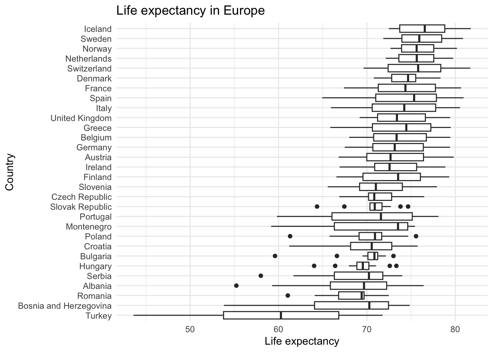
# reorder
gapminder %>%
dplyr::filter(continent == "Europe") %>%
group_by(country, year) %>%
summarize(
gdp_mean = mean(gdpPercap),
lifeExp_mean = mean(lifeExp)
) %>%
ggplot(aes(x = reorder(country, -lifeExp_mean), y = lifeExp_mean)) +
geom_boxplot() +
labs(
x = "Country",
y = "Life expectancy",
title = "Life expectancy in Europe"
) +
coord_flip()## `summarise()` has grouped output by 'country'. You can override using the
## `.groups` argument.
4.7.11.2 Plotting text
gapminder %>%
dplyr::filter(continent == "Asia" | continent == "Americas") %>%
group_by(continent, country) %>%
summarize(
gdp_mean = mean(gdpPercap),
lifeExp_mean = mean(lifeExp)
) %>%
ggplot(aes(x = gdp_mean, y = lifeExp_mean)) +
geom_point() +
geom_text(aes(label = country)) +
scale_x_log10() +
facet_grid(~continent)## `summarise()` has grouped output by 'continent'. You can override using the
## `.groups` argument.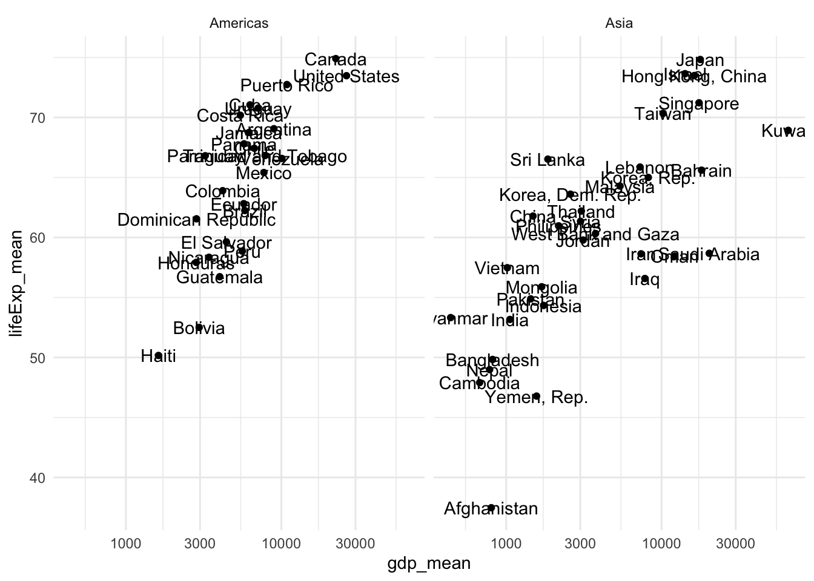
# with label
gapminder %>%
dplyr::filter(continent == "Asia" | continent == "Americas") %>%
group_by(continent, country) %>%
summarize(
gdp_mean = mean(gdpPercap),
lifeExp_mean = mean(lifeExp)
) %>%
ggplot(aes(x = gdp_mean, y = lifeExp_mean)) +
geom_point() +
geom_label(aes(label = country)) +
scale_x_log10() +
facet_grid(~continent)## `summarise()` has grouped output by 'continent'. You can override using the
## `.groups` argument.
# no overlaps
gapminder %>%
dplyr::filter(continent == "Asia" | continent == "Americas") %>%
group_by(continent, country) %>%
summarize(
gdp_mean = mean(gdpPercap),
lifeExp_mean = mean(lifeExp)
) %>%
ggplot(aes(x = gdp_mean, y = lifeExp_mean)) +
geom_point() +
geom_text_repel(aes(label = country)) + # there's also geom_label_repel
scale_x_log10() +
facet_grid(~continent)## `summarise()` has grouped output by 'continent'. You can override using the
## `.groups` argument.## Warning: ggrepel: 2 unlabeled data points (too many overlaps). Consider
## increasing max.overlaps## Warning: ggrepel: 1 unlabeled data points (too many overlaps). Consider
## increasing max.overlaps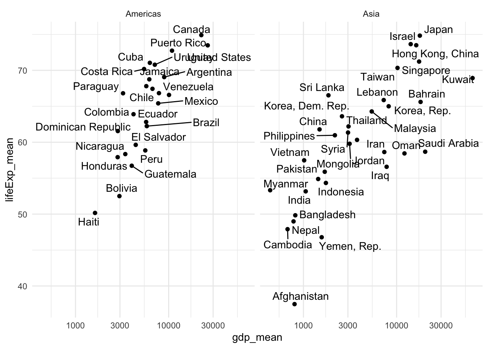
4.7.12 Ploting models
In plotting models, we extensively use David Robinson’s broom package in R. The idea is to transform model outputs (i.e., predictions and estimations) into tidy objects so that we can easily combine, separate, and visualize these elements.
4.7.12.1 Plotting several fits at the same time
model_colors <- RColorBrewer::brewer.pal(3, "Set1") # select three qualitatively different colors from a larger palette.
gapminder %>%
ggplot(aes(x = log(gdpPercap), y = lifeExp)) +
geom_point(alpha = 0.2) +
geom_smooth(method = "lm", aes(color = "OLS", fill = "OLS")) +
geom_smooth(
method = "lm", formula = y ~ splines::bs(x, df = 3),
aes(color = "Cubic Spline", fill = "Cubic Spline")
) +
geom_smooth(method = "loess", aes(color = "LOESS", fill = "LOESS")) +
theme(legend.position = "top") +
scale_color_manual(name = "Models", values = model_colors) +
scale_fill_manual(name = "Models", values = model_colors)## `geom_smooth()` using formula = 'y ~ x'
## `geom_smooth()` using formula = 'y ~ x'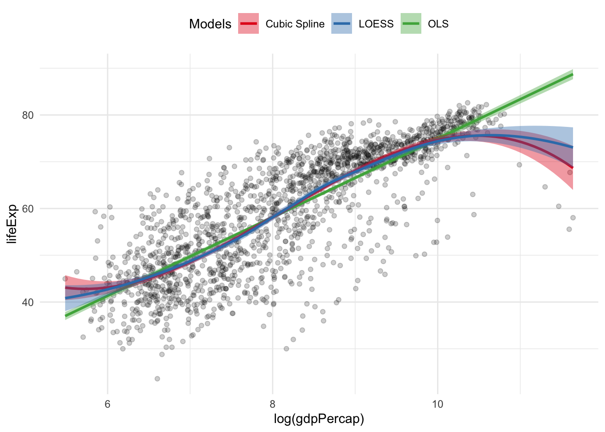
4.7.12.2 Extracting model outcomes
tidy() is a method in the broom package. It “constructs a dataframe that summarizes the model’s statistical findings”. As the description states, tidy is a function that can be used for various models. For instance, a tidy can extract the following information from a regression model.
Term: a term being estimatedp.valuestatistic: a test statistic used to compute p-valueestimateconf.low: the low end of a confidence intervalconf.high: the high end of a confidence intervaldf: degrees of freedom
Challenge
Try glance(out); what did you get from these commands? If you’re curious, you can try ?glance.
The followings are to show your degree of confidence.
4.7.12.2.1 Coefficients
# estimates
out_comp <- tidy(out)
p <- out_comp %>%
ggplot(aes(x = term, y = estimate))
p + geom_point() +
coord_flip() +
theme_bw()
4.7.12.2.2 Confidence intervals
# plus confidence intervals
out_conf <- tidy(out, conf.int = TRUE)
# plotting coefficients using ggplot2 (pointrange)
out_conf %>%
ggplot(aes(x = reorder(term, estimate), y = estimate, ymin = conf.low, ymax = conf.high)) +
geom_pointrange() +
coord_flip() +
labs(x = "", y = "OLS Estimate") +
theme_bw()
# another way to do it (errorbar)
out_conf %>%
ggplot(aes(x = estimate, y = reorder(term, estimate))) +
geom_point() +
geom_errorbarh(aes(xmin = conf.low, xmax = conf.high)) +
labs(y = "", x = "OLS Estimate") +
theme_bw()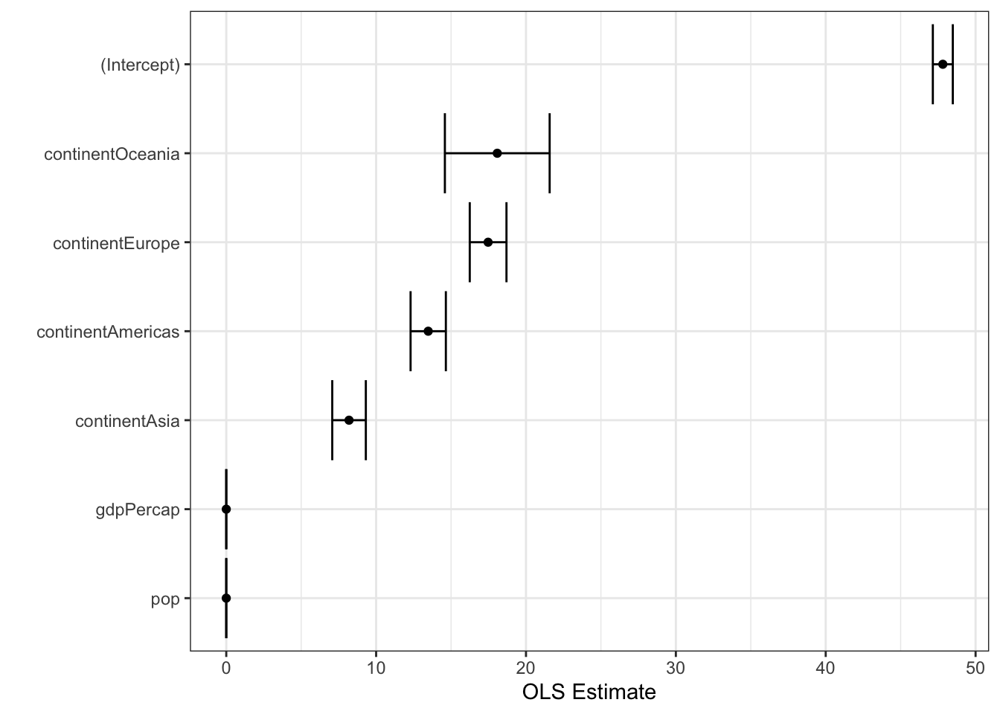
You can also calculate marginal effects using the marginaleffects package.